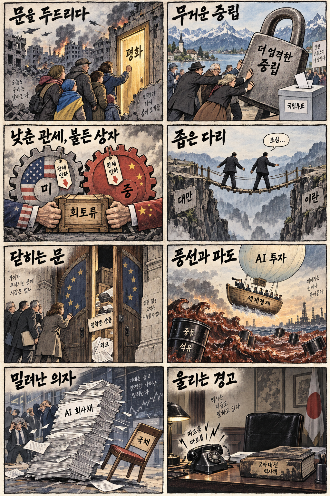
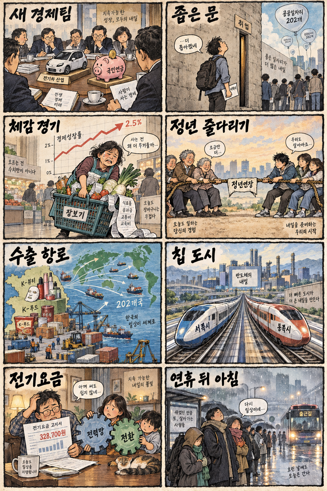

01
마이크로소프트 · 499.04→516.17달러 · +3.43%
내용요약 시가 대비 3.41% 올라 조사 종목 중 가장 강했습니다. 대형 소프트웨어주의 상대강도가 지수 상승을 뒷받침했습니다.
예상여파 국내 소프트웨어·클라우드 심리에는 우호적이지만 장기금리 상승이 밸류에이션 상단을 제한할 수 있습니다.
MORNING_BRIEFING_20260928
작성 시각: 2026-09-28 06:39 KST · 직전 미국 정규장과 2026-09-28 KST 당일 공개 기사 기준
직전 미국 정규장인 9월 25일 뉴욕증시는 다우 +0.93%, S&P 500 +0.51%, 나스닥 +0.48%로 동반 상승했습니다. 미·이란 협상 기대에 국제유가가 하락하며 물가 부담을 덜었고, 필라델피아 반도체지수도 1.4% 올랐습니다. 다만 미 10년물 금리 5.22% 돌파는 성장주 밸류에이션의 상단을 누르는 변수입니다. 한국 증시는 연휴 뒤 첫 개장을 앞두고 있어 그동안 누적된 미국 증시·미중 공급망·금리 변수를 시초가에 함께 반영할 가능성이 큽니다.
| 지수 | 종가 | 등락률 | 한국 증시 시사점 |
|---|---|---|---|
| 다우존스 | 51,828.62 | +0.93% | 유가 하락과 경기민감주 회복, 금리 상단 함께 점검 |
| S&P 500 | 7,743.41 | +0.51% | 유가 하락과 경기민감주 회복, 금리 상단 함께 점검 |
| 나스닥 종합 | 27,068.72 | +0.48% | 반도체 강세는 우호적이나 장기금리 부담 병존 |
직전 정규장에서 다우 +0.93%, S&P 500 +0.51%, 나스닥 +0.48%로 마감했습니다.
칩 수요보다 전력망과 데이터센터 준공 속도가 실제 설치의 제약으로 부상했습니다.
관세 완화 기대와 공급망 입장차를 함께 가격에 반영할 가능성이 큽니다.
06:30 장전 시점에 문턱을 모두 검증할 데이터가 부족해 현금 관망을 유지합니다.
9월 27일 보고서는 일요일 휴장으로 공식 추천을 내지 않았습니다. 게시 당시 판단을 유지하며 사후 종목을 추가하지 않습니다.
| 시장 | 종가 | 등락률 | 기준 |
|---|---|---|---|
| KOSPI | 7,080.92 | +0.90% | 최근 거래일 9월 23일 · 오늘 06:30 장전 |
| KOSDAQ | 844.48 | +1.21% | 최근 거래일 9월 23일 · 오늘 06:30 장전 |
| 다우존스 | 51,828.62 | +0.93% | 미국 9월 25일 정규장 |
| S&P 500 | 7,743.41 | +0.51% | 미국 9월 25일 정규장 |
| 나스닥 종합 | 27,068.72 | +0.48% | 미국 9월 25일 정규장 |
마이크로소프트가 시가 대비 +3.41%로 조사 종목 중 가장 강했습니다.
슈퍼마이크로 +2.96%, 어플라이드 머티리얼즈 +1.28%로 강했습니다.
테슬라가 시가 대비 -3.32%로 조사 종목 중 낙폭이 가장 컸습니다.
인텔 -3.06%, 크라우드스트라이크 -2.84%로 차별화 약세였습니다.
내용요약 시가 대비 3.41% 올라 조사 종목 중 가장 강했습니다. 대형 소프트웨어주의 상대강도가 지수 상승을 뒷받침했습니다.
예상여파 국내 소프트웨어·클라우드 심리에는 우호적이지만 장기금리 상승이 밸류에이션 상단을 제한할 수 있습니다.
내용요약 시가 대비 2.96% 상승하며 인공지능 서버 관련 수요 기대를 반영했습니다.
예상여파 국내 서버 부품·냉각·전력 공급망 관심을 높일 수 있으나 고변동 종목의 단기 추격은 피해야 합니다.
내용요약 시가 대비 1.50% 올라 대형 기술주 가운데 견조한 흐름을 보였습니다.
예상여파 소비 전자와 부품 공급망 심리에 긍정적일 수 있지만 환율과 제품 수요의 실제 확인이 필요합니다.
내용요약 시가 대비 3.32% 하락해 조사 종목 중 낙폭이 가장 컸습니다. 공개 시세만으로 단일 원인을 단정하지 않습니다.
예상여파 전기차·이차전지 테마의 위험선호를 낮출 수 있어 재개장 시 동종업종의 상대강도를 확인해야 합니다.
내용요약 시가 대비 3.06% 하락해 미국 반도체지수 상승과 달리 종목 차별화가 나타났습니다.
예상여파 반도체 업종 전체 강세를 개별 종목에 일괄 적용하기보다 제품·실적·수급을 분리해 봐야 합니다.
오늘 국내 증시는 연휴 뒤 첫 장을 앞두고 있습니다. 최근 거래일 KOSPI는 7,080.92로 전일 종가 대비 +0.90% 올랐지만 시가 대비로는 -1.02% 밀렸습니다. 미국 3대 지수 상승과 반도체지수 강세는 우호적이지만, 연휴 동안 누적된 미중 공급망 뉴스와 높은 장기금리를 한꺼번에 반영하며 시초가 변동성이 커질 수 있습니다. 반도체·AI 전력망은 관심 업종이지만 장전 호재만 보고 갭 상승을 추격하지 않습니다.
오늘은 추천 없음 — 현금 관망
06:30 장전 시점에는 당일 시가 진입 기준과 호가 유동성, 외국인·기관 수급을 검증할 수 없습니다. 실적 컨센서스 변화와 과거 유사 조건 표본도 추천 문턱을 충족하는 수준으로 확보되지 않아 종합점수·상승확률을 임의 산출하지 않았습니다.
관심 연결종목 대형 반도체, 데이터센터 전력망, K-뷰티·K-푸드는 개장 뒤 상대강도 관찰 대상일 뿐 매수 추천이 아닙니다. 과도한 시초가 갭은 추격매수하지 않습니다.
누적된 해외 재료가 시초가에 한꺼번에 반영되는지 봅니다.
높은 장기금리가 성장주와 원·달러 환율에 미치는 영향을 봅니다.
정상회담 선언 이후 수출통제와 통관 흐름의 실제 변화를 봅니다.
HBM·D램 가격과 설비투자 전망이 국내 반도체 기대를 지지하는지 봅니다.
핵심 요약: 인공지능 투자 경쟁의 병목이 칩 조달에서 전력망·데이터센터 준공으로 이동하고 있습니다. 동시에 HBM4 실적 기대, 국산 AI칩 자금 집행, 현실 공간 AI가 기술 생태계의 다음 실행력을 시험합니다.
내용요약 인공지능·반도체 투자가 빠르게 늘지만 송배전망 증설은 뒤처져 전력 병목이 핵심 제약으로 부상했다는 당일 보도입니다.
예상여파 데이터센터와 반도체 클러스터의 입지는 칩 성능뿐 아니라 계통 접속과 전력 조달 일정에 더 크게 좌우될 수 있습니다.
내용요약 모건스탠리 분석을 인용해 향후 3년간 GPU 서버 상당수가 데이터센터 지연으로 제때 설치되지 못할 수 있다는 당일 보도입니다.
예상여파 서버 수요가 실제 매출로 전환되는 시점이 늦어질 수 있어 전력·냉각·건설 공급망의 실행력이 중요해집니다.
내용요약 국민성장펀드의 퓨리오사AI 지원 계획이 민간 매칭 지연으로 집행되지 못하고 있다는 당일 단독 보도입니다.
예상여파 국산 AI칩 육성의 방향과 별개로 자금 집행 구조와 민간 투자 유인이 사업 속도를 결정할 수 있습니다.
내용요약 HBM4 수요를 바탕으로 삼성전자의 3분기 영업이익 신기록 가능성을 제기한 당일 산업 보도입니다.
예상여파 메모리 가격과 고대역폭 제품 믹스는 실적에 우호적이지만 높은 시장 기대와 실제 출하 간 간극은 변동 요인입니다.
내용요약 가상공간 기술을 현실 공간을 이해하고 로봇을 움직이는 인공지능으로 확장하는 흐름을 다룬 당일 보도입니다.
예상여파 피지컬 AI 경쟁이 센서·지도·시뮬레이션·행동 데이터로 넓어지며 로봇 상용화 생태계가 재편될 수 있습니다.
핵심 요약: 우크라이나 현장의 공습은 평화 기대를 제한하고, 미중 회담은 관세 완화와 희토류 갈등을 동시에 남겼습니다. 스위스 중립성 투표와 이스라엘·네덜란드 외교 충돌까지 안보와 통상의 경계가 더 흐려지고 있습니다.
내용요약 러시아의 우크라이나 여러 지역 공습으로 민간인 사망자가 발생했다는 당일 보도입니다.
예상여파 외교 대화 기대와 현장 충돌이 병존해 에너지·곡물·유럽 안보의 위험 프리미엄이 쉽게 해소되기 어렵습니다.
내용요약 스위스 국민투표에서 더 엄격한 중립 원칙을 헌법에 담는 안이 큰 표차로 부결됐다는 당일 보도입니다.
예상여파 스위스가 유럽 안보 변화에 대응할 정책 여지를 유지하면서 제재·방산 협력 논의가 이어질 수 있습니다.
내용요약 미중 정상회담 뒤 관세 완화 성과와 달리 희토류를 둘러싼 입장차가 곧바로 드러났다는 당일 보도입니다.
예상여파 첨단 제조 공급망의 병목이 계속될 수 있어 합의 선언보다 수출통제와 실제 통관 흐름이 중요합니다.
내용요약 이스라엘이 정착촌 제품을 제한한 네덜란드에 외교관 지위 박탈 조치로 맞섰다는 당일 보도입니다.
예상여파 가자 전쟁을 둘러싼 유럽과 이스라엘의 외교 갈등이 통상·제재 논의로 번질 수 있습니다.
내용요약 OECD가 AI 투자 덕분에 세계 경제가 버티고 있지만 중동 충격으로 내년 둔화 가능성이 있다고 봤다는 당일 보도입니다.
예상여파 AI 설비투자의 성장 기여와 에너지 가격 충격이 맞물려 금리·물가 경로의 불확실성이 커질 수 있습니다.

핵심 요약: 새 경제팀은 전기차와 퇴직연금을 첫 현안 테이블에 올렸습니다. 청년 체감고용과 정년연장 갈등이 남은 가운데 K-뷰티·K-푸드 수출은 성장 축을 넓히고, 연휴 뒤 출근길에는 비와 큰 일교차가 이어집니다.
내용요약 새 경제팀이 전기차와 퇴직연금을 첫 경제현안간담회의 주요 의제로 다룬다는 당일 보도입니다.
예상여파 내수·산업 지원과 장기 자산 형성 정책의 구체성에 따라 자동차·금융 업종의 정책 기대가 달라질 수 있습니다.
내용요약 공공일자리 증가가 전체 고용지표를 끌어올렸지만 청년 체감고용과는 거리가 있다는 당일 보도입니다.
예상여파 민간의 질 좋은 신규 채용과 생산성 높은 서비스업 투자가 이어지지 않으면 소비 회복이 제한될 수 있습니다.
내용요약 정년연장 논의가 기성세대의 고용 안정과 청년 채용 기회 사이에서 조정점을 찾고 있다는 당일 보도입니다.
예상여파 임금체계 개편과 신규채용 보완책이 함께 설계되지 않으면 세대 간 노동시장 갈등이 커질 수 있습니다.
내용요약 한국 화장품과 식품이 202개국으로 수출되며 신기록을 이어가고 있다는 당일 보도입니다.
예상여파 수출 품목 다변화에는 긍정적이지만 현지 유통망, 환율, 식품·화장품 규제 대응력이 지속성을 좌우합니다.
내용요약 서울 등 출근길 곳곳에 빗방울이 예상되고 낮에는 기온이 오르는 당일 기상 보도입니다.
예상여파 짙은 안개와 최대 15도 안팎의 일교차로 교통 안전과 건강 관리에 주의가 요구됩니다.
